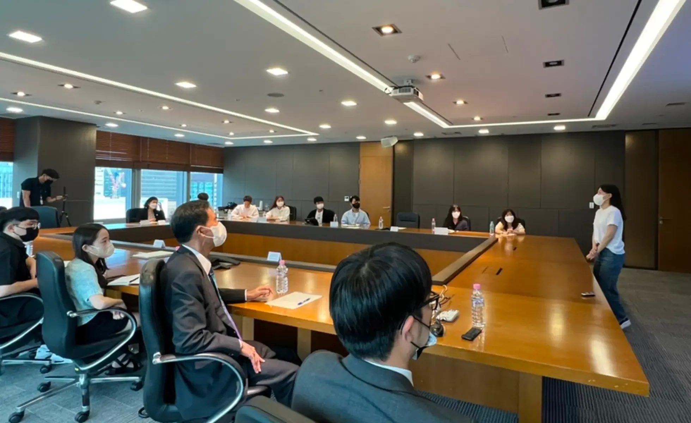

국내 대표 로펌과 연계한
멘토링 프로그램 운영
전문가들의 재능과 경험을 나누며 꿈을 향해 나아가는 이들의 성장을 응원합니다. 멘토와 멘티가 함께 배우고 성장하는 의미 있는 나눔을 실천하고 있습니다.

기업의 사회적 책임에 진심을 담는 길은 체계적인 실천입니다.
멘토링 봉사 / 지역사회 및 국제봉사 /
재능기부 · 직업봉사
잇올은 멘토링을 통해 성장의 경험을 나누고
따뜻한 나눔을 실천합니다.
청소년과 지역사회의 성장을 위해 학습, 진로, 인생 경험을 나누며 함께 성장하는 멘토링 활동을 펼치고 있습니다.
잇올은 지역과 세계를 잇는 나눔으로 더 따뜻한 사회를 만들어갑니다.
지역사회와 도움이 필요한 곳에 지속적인 관심을 가지고 다양한 봉사활동과 나눔을 통해 사회적 책임을 실천하고 있습니다. 국제로타리의 정식 승인을 받은 서울한수올키 로타리위성클럽과 지역별 봉사단을 연계해 체계적으로 봉사를 실천하고 있습니다.
잇올은 업무 전문성과 지식으로 따뜻한 나눔을 만들고, 실천합니다.
재능기부/직업봉사는 잇올러가 가진 전문적인 업무 기술이나 지식을 활용해 사회에 기여하는 활동입니다. 자신의 업무 능력을 바탕으로 다른 사람들에게 도움을 주거나, 사회적 문제를 해결하는 데 힘을 보태는 따뜻한 나눔의 실천입니다.